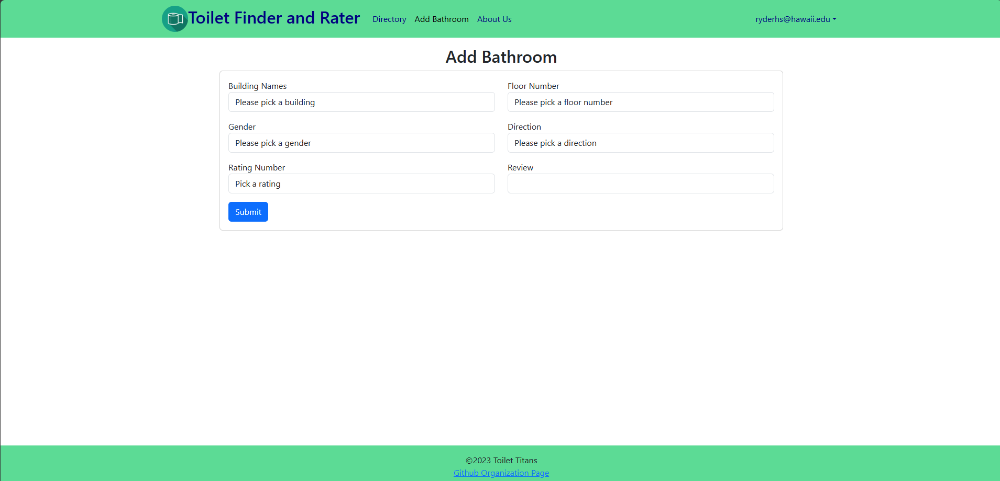

Toilet Finder
Idea
Toilet Finder was an app born from the thought of needing to know where the bathroom is at UH Manoa and if it was any good in the first place. I know that I have my own personal bathroom that is cleaner than the others and it would be cool if others could rate and find out which bathrooms are the best.
Role in development
My personal role was the frontend, finding out what needed to be done and in what order, just being a cleanup man. Due to time constraints we weren’t able to finish everything that we wanted, including a map where people could find out the nearest bathroom in relation to their current location, sort of like the DaBus app. But obviously there are things that are in priority like making sure that the directory and the form for adding bathroom works.
While I wasn’t the leader I do feel like I did contribute significantly when it came to the ideas of what to do such as the idea of direction. Here’s a problem to which I don’t think there is any intuitive solution: When designing a bathroom rating system, what do you do in order to differentiate two bathrooms on the same floor? Numbers seem like first thing because it’s very easy to just say bathroom #1 or bathroom #2, but what makes that bathroom #1 and not 2? You may then respond with just name the bathroom based off of the closest room to it. But what about bathrooms in buildings where it’s just in the middle like Sakamaki? So in order to solve that problem I just devised that we would use direction because there is no way that there are two bathrooms on the same floor right next to each other, so you would just name them after which direction they were facing. This does have this problem of how would people know what bathroom is in what direction, this is solved through adding a compass. The front end is just making the things that are visible to users and being a cleanup man means that when Jianle (Our main person) was done, I would just do anything that he didn’t do such as adding two more inputs to the add bathroom form (review, direction). Or just do anything that other people didn’t want to do like updating the github pages.

Main Takeaways
I learned that communication and getting things done on time are the most important things. Especially in a group environment where people getting other things done relies on what someone else does first, they can’t start unless the other person finishes. Communication also keeps people accountable because if we don’t communicate then there’s no telling of what people should do. This is why I really like the idea of github projects where people have their own tasks to do and without needing to directly communicate through email or discord, people can keep track of what they did.